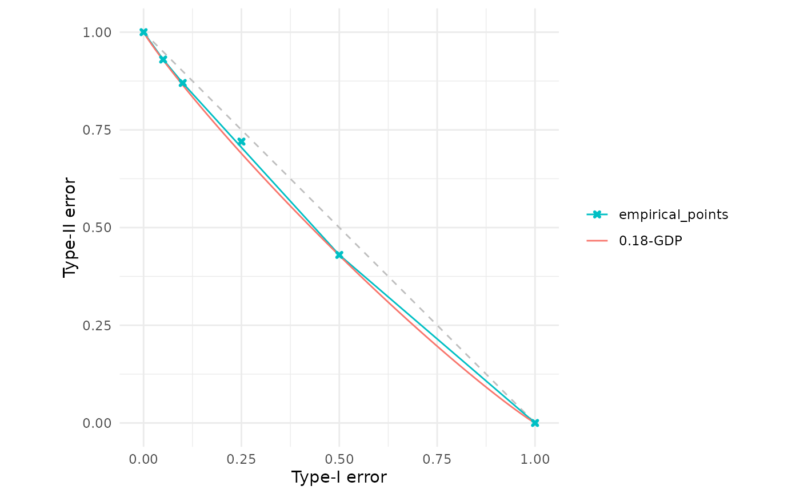
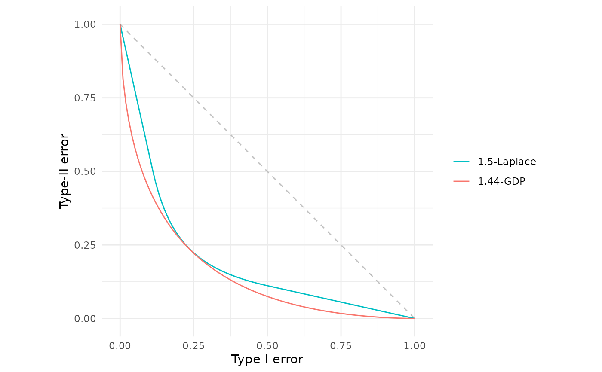
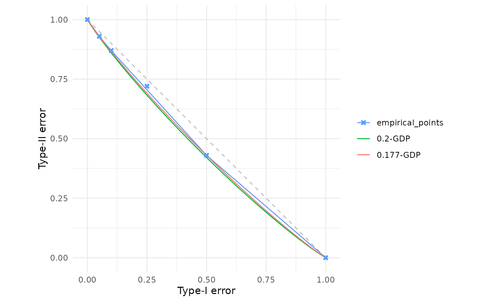

Gaussian differential privacy parameters lower bounding empirical trade-off points
Source:R/est_gdp.R
est_gdp.RdEstimates the minimal Gaussian differential privacy (GDP) parameter \(\mu\) that provides a valid lower bound for a collection of empirical or analytically-derived trade-off points. Note: due to the numerical optimisation involved, this is only an approximation.
Arguments
- x
One or more f-DP trade-off specifications to be lower bounded. Accepts the same flexible input types as
fdp():A function (user-defined or built-in, e.g.,
lap()) that when called with a numeric vectoralphareturns a data frame with columnsalphaandbeta;A data frame with columns
alphaandbetacontaining empirical trade-off points;A numeric vector of length 101 (interpreted as
betavalues on the canonical gridalpha = seq(0, 1, by = 0.01)).
The function extracts all Type-I/Type-II error coordinates and finds the minimal \((\varepsilon, \delta)\)-DP parameters lower bounding them.
- dp
Integer scalar specifying the number of decimal places of precision for the result (with careful rounding employed to ensure the bound holds). Must be a non-negative integer. Default is
2L.
Value
A GDP trade-off function object (see gdp()) with class c("fdp_gdp_tradeoff", "function").
This represents the tightest \(\mu\)-GDP trade-off function that lower bounds the input x.
Details
Given a set of trade-off points \(\{(\alpha_i, \beta_i)\}_{i=1}^n\) representing Type-I and Type-II error rates, this function numerically solves for the smallest \(\mu \ge 0\) such that the \(\mu\)-GDP trade-off function $$G_\mu(\alpha) = \Phi\left(\Phi^{-1}(1-\alpha) - \mu\right)$$ satisfies \(G_\mu(\alpha_i) \le \beta_i\) for all \(i = 1, \ldots, n\), where \(\Phi\) denotes the standard normal cumulative distribution function.
Warning: since this is a numerical optimisation on a finite set of trade-off points, there is no mathematical guarantee of correctness. As such, the \(\mu\) found ought best to be viewed as an approximate lower bound on the true values, since there could be intermediate trade-off points that are not supplied which cause the true values to be larger.
This function may be useful for post-hoc privacy auditing, privacy budget allocation, or mechanism comparison.
References
Dong, J., Roth, A. and Su, W.J. (2022). “Gaussian Differential Privacy”. Journal of the Royal Statistical Society Series B, 84(1), 3–37. doi:10.1111/rssb.12454 .
See also
gdp() for constructing GDP trade-off functions with known \(\mu\),
fdp() for visualising and comparing trade-off functions,
gdp_to_epsdelta() for converting from GDP to classical \((\varepsilon, \delta)\)-DP,
est_epsdelta() for estimating classical DP parameters from trade-off points.
Examples
# Estimate GDP from manually specified empirical trade-off points
# These could come from empirical measurements or privacy audits
empirical_points <- data.frame(
alpha = c(0.00, 0.05, 0.10, 0.25, 0.50, 1.00),
beta = c(1.00, 0.93, 0.87, 0.72, 0.43, 0.00)
)
result <- est_gdp(empirical_points)
result
#> Gaussian Differential Privacy Trade-off Function
#> Parameters:
#> μ = 0.18
# Visualise how well the GDP bound fits the empirical points
fdp(empirical_points, result)

# Find the GDP lower bound for a Laplace mechanism.
lap_mechanism <- lap(1.5)
gdp_bound <- est_gdp(lap_mechanism)
gdp_bound
#> Gaussian Differential Privacy Trade-off Function
#> Parameters:
#> μ = 1.44
# Compare the Laplace mechanism with its GDP lower bound
fdp(lap_mechanism, gdp_bound)

# Control precision with the dp parameter
result_1dp <- est_gdp(empirical_points, dp = 1L)
result_3dp <- est_gdp(empirical_points, dp = 3L)
# Higher precision gives tighter bounds
fdp(empirical_points, result_1dp, result_3dp)
